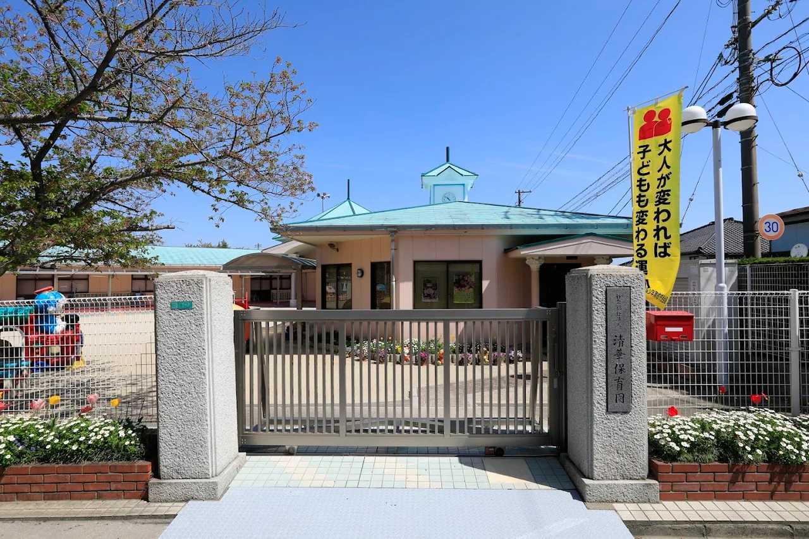

ひとりひとりのペースに合わせて
子どもの思いや育ちのペースを大切にしながら、安心して過ごせる環境を整えています。
山口県岩国市由宇町の保育園
離乳食も、慣らし保育も、毎日の様子の共有も。
お子さまのペースを大切に、ご家庭と相談しながら園生活を始めます。
0歳児（生後約半年）から就学前まで、お預かりしています。
園見学についてお子さまと一緒のご見学も歓迎しています。

清華保育園の園舎 / 岩国市由宇町
子どもの思いや育ちのペースを大切にしながら、安心して過ごせる環境を整えています。
菜園活動やクッキング、戸外での活動などを通して、五感を使った豊かな体験を大切にしています。
子ども、保護者、職員、地域とのつながりを大切にし、笑顔あふれる園づくりを目指しています。
時間帯を選ぶと、その時間の過ごし方をご覧いただけます。
入園までの4つのステップ
平日に随時受け付けています。園の行事等によりご案内できない時間帯もありますので、事前にお電話、またはお問い合わせフォームからご予約ください。お子さまと一緒にお越しいただけます。
入園後はお子さまの様子に合わせて、ご家庭と相談しながら少しずつ進めていきます。
2026年11月1日から受け入れを始めました。
保護者のお仕事の有無にかかわらず、保育園などに通っていないお子さまが、月に決まった時間まで園で過ごせる制度です。ほかのお子さまや保育士とのふれあいをとおして、お子さまの育ちとご家庭の子育てを応援します。
ご利用までの流れ
申請の方法や市内のほかの実施施設は、岩国市の案内をご覧ください。電話受付は平日 9:00〜17:00 です。
岩国市の制度案内（別タブ）地域のみなさまのご参加をお待ちしています。
2026年11月〜2027年3月の園庭開放予定です。ご参加を希望される方は、前日までにお電話でご連絡ください。
| 日付 | 内容 | 時間 |
|---|---|---|
| 11月6日（金） | リトミックで遊ぼう | 9:50〜10:15 |
| 11月26日（木） | ペットボトル楽器を作ろう・リズム遊び | 10:00〜10:45 |
| 12月4日（金） | リトミックで遊ぼう | 9:50〜10:15 |
| 12月23日（水） | クリスマスの飾りを作ろう | 10:00〜10:45 |
| 日付 | 内容 | 時間 |
|---|---|---|
| 1月21日（木） | 初めてのお絵かきを楽しもう | 10:00〜 |
| 2月5日（金） | リトミックで体を動かそう | 10:00〜 |
| 2月24日（水） | おひなさまの制作をしよう（5名限定） | 10:00〜 |
| 3月5日（金） | リトミックで体を動かそう | 10:00〜 |
ウイルスや感染症の流行状況により、中止となる場合があります。また、参加人数に限りがありますので、参加をご希望の方は前日までに清華保育園（0827-63-1222）へご連絡ください。